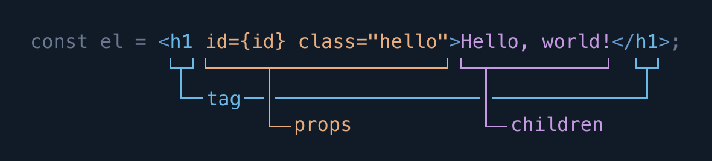

JSX, Elements and Renderers
Note for React developers: If you’re familiar with how JSX and elements work in React, you may want to skip ahead to the section on components. Elements in Crank work almost exactly as they do in React.
Crank is best used with JSX, an XML-based syntax extension to JavaScript. Crank is designed to work with both the Babel and TypeScript parsers out-of-box; all you need to do is enable JSX parsing, import the createElement function from Crank, and include a @jsx comment directive (/** @jsx createElement */). The parser will then transpile JSX into createElement calls. For example, in the code below, the JSX expression assigned to el transpiles to the createElement call assigned to el1.
/** @jsx createElement */
import {createElement} from "@bikeshaving/crank";
const el = <div id="element">An element</div>;
// transpiles to:
const el1 = createElement("div", {id: "element"}, "An element");The createElement function returns an element, a plain old JavaScript object. Elements on their own don’t do anything special; rather, Crank provides special classes called renderers which interpret elements to produce and manage DOM nodes, HTML strings, canvas scene graphs, or whatever else you can think of. Crank ships with two renderers for web development, one for managing DOM nodes, available through the module @bikeshaving/crank/dom, and one for creating HTML strings, available through the module @bikeshaving/crank/html. You can use these modules to render interactive user interfaces on the client and HTML responses on the server.
/** @jsx createElement */
import {createElement} from "@bikeshaving/crank";
import {renderer as DOMRenderer} from "@bikeshaving/crank/dom";
import {renderer as HTMLRenderer} from "@bikeshaving/crank/html";
const el = <div id="hello">Hello world</div>;
const node = document.createElement("div");
DOMRenderer.render(el, node);
console.log(node.innerHTML); // <div id="element">Hello world</div>
console.log(HTMLRenderer.render(el)); // <div id="element">Hello world</div>The parts of an element.

An element can be thought of as having three main parts: a tag, props and children. These roughly correspond to tags, attributes and content, the parts of an HTML element, and for the most part, you can copy-paste HTML into JavaScript and have things work as you would expect. The main difference is that JSX has to be well-balanced like XML, so void tags must have a closing slash (<input /> not <input>). Also, if you forget to close an element, the parser will throw an error, whereas with HTML, your tags can be unbalanced or malformed and mostly still work. The advantage of using JSX is that it allows arbitrary JavaScript expressions to be interpolated into elements as the tag, props or children, which means you can use syntax which looks like HTML/XML seamlessly within JavaScript.
Tags
const intrinsicEl = <div />;
// transpiles to:
const intrinsicEl1 = createElement("div");
const componentEl = <Component />;
// transpiles to:
const componentEl1 = createElement(Component);Tags are the first part of an element expression, surrounded by angle brackets, and can be thought of as the name or type of the element. By convention, JSX parsers treat lower-cased tags as strings and capitalized tags as variables. When a tag is a string, this signifies that the element will be handled by the renderer. In Crank, we call elements with string tags intrinsic or host elements, and for both of the web renderers, these elements correspond to actual HTML elements like div or input. As we’ll see later, elements can also have function tags, in which case the behavior of the element is defined by the execution of the referenced function and not the renderer. These elements are called component elements.
Props
const myClass = "my-class";
const el = <div id="my-id" class={myClass} />;
// transpiles to:
const el1 = createElement("div", {id: "my-id", "class": myClass});
console.log(el.props); // {id: "my-id", "class": "my-class"}The attribute-like key="value" syntax in JSX is transpiled to a single object for each element. We call this object the props object, short for “properties.” The value of each prop is a string if the string-like syntax is used (key="value"), or it can be an interpolated JavaScript value if the value is placed within curly brackets (key={value}). Props are used by both intrinsic and component elements to pass values into them and can be thought of as named arguments.
Children
const list = (
<ul>
<li>Element 1</li>
<li>Element 2</li>
</ul>
);
// transpiles to:
const list1 = createElement("ul", null,
createElement("li", null, "Element 1"),
createElement("li", null, "Element 2"),
);
console.log(list.props.children.length); // 2As with HTML, Crank elements can have contents, placed between its opening and closing tags. These contents are referred to as children. Because elements can have children which are also elements, elements can form a recursive tree of nodes.
const el = <div>{"a"}{1 + 1}{true}{false}{null}{undefined}</div>;
console.log(el.props.children); // ["a", 2, true, false, null, undefined]
renderer.render(el, document.body);
console.log(document.body.innerHTML); // <div>a2</div>By default, the contents of JSX are interpreted as strings, but you can use curly brackets just as we did with props to interpolate arbitrary JavaScript expressions into an element’s children. Besides elements, almost every value in JavaScript can participate in the element tree. Strings and numbers are rendered as text, while the values null, undefined, true and false are erased, allowing you to render things conditionally with boolean expressions. Crank also allows iterables of values to be inserted, so, for instance, you can interpolate an array or a set of elements into an element tree.
const arr = [1, 2, 3];
const set = new Set(["a", "b", "c"]);
renderer.render(<div>{arr} {set}</div>, document.body);
console.log(document.body.innerHTML); // "<div>123 abc</div>"Element diffing
Crank uses the same “virtual DOM diffing” algorithm made popular by React, where elements of the tree between renders are compared by tag and position, and subtrees whose root tags don’t match are thrown away. This allows you to write declarative code which focuses on producing the right element tree, while Crank does the dirty work of managing state and mutating the DOM.
renderer.render(
<div>
<span>1</span>
</div>,
document.body,
);
const div = document.body.firstChild;
const span = document.body.firstChild.firstChild;
renderer.render(
<div>
<span>1</span>
<span>2</span>
</div>,
document.body,
);
console.log(document.body.firstChild === div); // true
console.log(document.body.firstChild.firstChild === span); // true